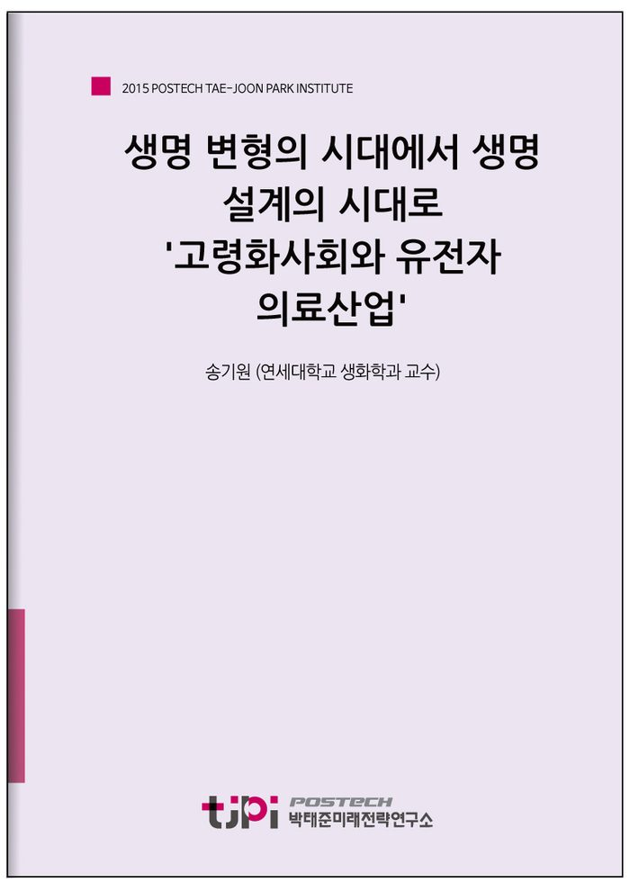

저자 송기원 (연세대학교 생화학과 교수)보도일 2015-10-19
요 약
생물 로봇 등 새로운 형태의 생명체 변형최근에는 유전공학적 방법으로 생명체를 변형시키는 것을 넘어 곤충이나 동물의 뇌와 신경에 직접 전극을 장착하여 인간 임의로 조작할 수 있는 곤충 로봇이나 생물 로봇을 만들고 있다. 생명체를 설계하고 디자인하는 합성생물학의 시대로 2000년대 들어서며 인간 유전체 프로젝트가 마무리될 무렵부터는 한 두개 인간이 원하는 유전자를 집어넣어 생명체를 변형시키는 유전공학의 시대가 차라리 소박했다고 느껴지게 하는 새로운 개념의 연구가 시작되었다.
이름하여 합성생물학이다. 합성생물학의 경제적 목적은 의약품 생산, 환경오염 물질 제거, 에너지생산 등 인간의 목적대로 디자인된 인공 생명체를 개발하는 것이다. 20세기 이후 인구의 폭발적인 증가와 평균수명의 확대로 인류에게 생명을 변형시켜 먹거리와 의약품을 얻는 기술 개발이 불가피했을 것이다. 이제우리는 원하는 생명체를 무엇이건 조작하고 만들 수 있게 되었고 그런 미래를 향해 빠르게 달려가고 있다. 문제는 어디까지인가이다. 인간이 마음대로 새로운 생명체를 설계해 만들어내고, 다른 생명체를 제작 기계나 유기체 로봇으로 만들어도 되는 것일까?
----------------------------------------------------------------
박태준미래전략연구소는 2015년 미래전략 연구 대상으로 선정한
‘10년 내 한국사회가 당면할 가장 중요한 이슈는 무엇이며, 어떻게 대응해야 하는가?’
라는 주제에 대해 다양한 분야에서 업적을 이룬 전문 지식인들의 생각을 들어보았습니다.
< 전문가 36인의 에세이를 엮어 '10년 후 한국사회'라는 책으로 발간되었습니다.
도서보기
목 차
송기원
연세대학교 생화학과 교수
코넬대학교 생화학 및 분자생물학 박사. 미국 밴더빌트대학교 화학과 및 Science Communication 전공 방문교수. 현재 연세대학교 생명시스템대학 생화학과 교수. 저서 『생명이란 무엇인가』 『의학과 문화』 『멋진 신세계와 판도라의 상자』(공저), 『세계 자연사 박물관 여행』(공저) 등.
내 용
[2015 전문가 에세이] 생명 변형의 시대에서 생명 설계의 시대로 '고령화사회와 유전자 의료산업'
송기원 (연세대학교 생화학과 교수)

